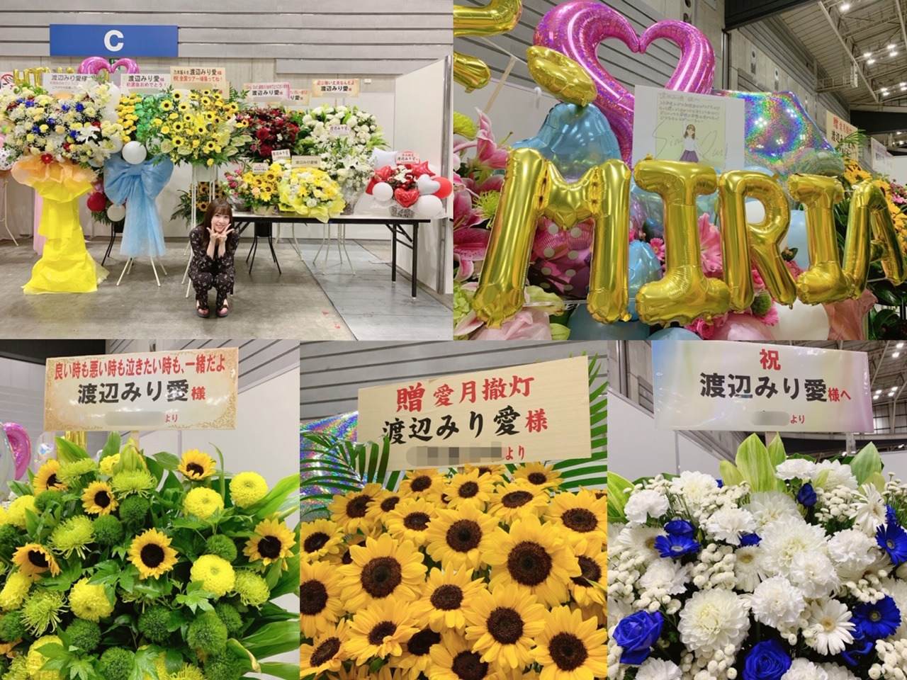
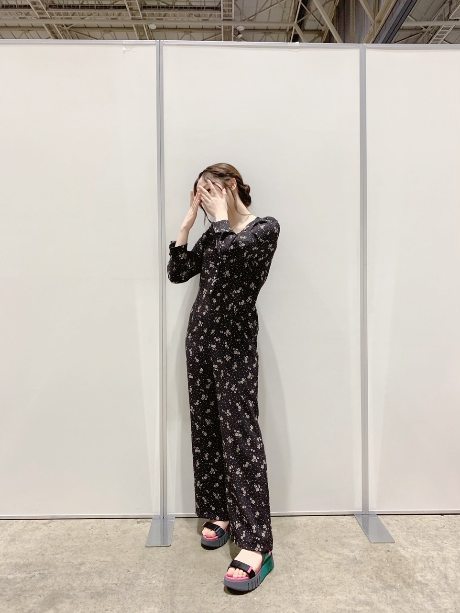
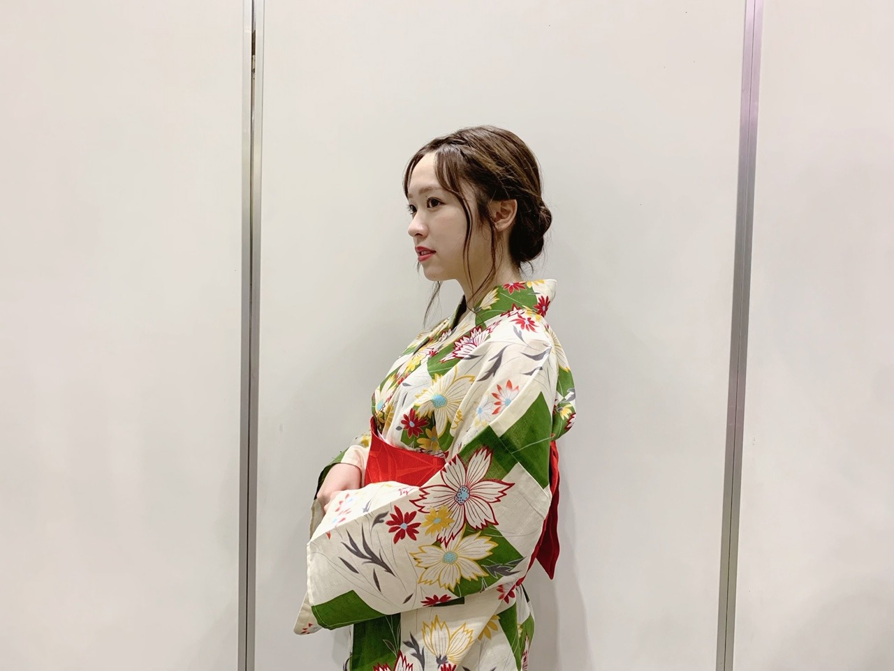

2019/0803Sat三角形

我が家では最近梅雨明けしたと同時に、
新しいフェイスタオルやバスタオルを
購入しました。
新しいバスタオルを洗って
干した後のあのふんわり香るあの柔軟剤の香り
とても良いですね〜

皆さんのお花の色やお花の種類のセンスが
毎回良過ぎる、、
会いに来て頂く事だけでも有難いのに
笑わせてくれたり、優しさ溢れる言葉を頂いたり
もう感謝しかないです、
ありがとうございます！！
1.2部

3部

4.5部

握手会の後はらじらーにお邪魔させて
頂きました。
オリラジさんと桃子ちゃん、日奈子
ありがとうございました〜
らじらーのスタッフさんの雰囲気と
オリラジさんのCMが流れてる時でも
笑わせて下さる優しさに
毎度楽しく嬉しい気持ちになります。
BUBKA9月号、出てます！
特大ポスターにもなっているそうです、、
恐縮です。
発売中です、宜しくお願い致します。
猫舌SHOWROOM、見てくださった皆様
ありがとうございました！
毎回うるさくしてしまい、申し訳ありません、、
インテックス大阪で全国握手会
伊藤理々杏ちゃんとペアです。
宜しくお願い致します！
そして全国ツアーも折り返し、次は大阪です。
メンバー皆でお待ちしております！
水分補給をしっかりとり
熱中症には十分お気をつけください！
みり愛
2019/08/03 19:30
コメント(339)
お疲れ様！ブログありがとう！！！
いつも3部は外出ちゃうから取ってなくて。
今回浴衣を見れなかったのが辛いです〜、、
自分は来襲また会いに行くからよろしくね！！！
いつも3部は外出ちゃうから取ってなくて。
今回浴衣を見れなかったのが辛いです〜、、
自分は来襲また会いに行くからよろしくね！！！
ブログ更新ありがとう！
デコ出し似合うね！！
浴衣もめちゃくちゃ似合ってるし、行けなかったの後悔してる、、、
BUBKA購入したよ！
みり愛ちゃんのポスターを実家の冷蔵庫に貼っといた
中はまたじっくり見させてもらいます。
バッティングの動画可愛かったよ！
俺も野球してるから握手会で野球の話したいな〜
次会えるのは全ツ大阪！
握手会は名古屋個握だ！
まだまだ夏が続くけど熱中症気をつけてね！
デコ出し似合うね！！
浴衣もめちゃくちゃ似合ってるし、行けなかったの後悔してる、、、
BUBKA購入したよ！
みり愛ちゃんのポスターを実家の冷蔵庫に貼っといた
中はまたじっくり見させてもらいます。
バッティングの動画可愛かったよ！
俺も野球してるから握手会で野球の話したいな〜
次会えるのは全ツ大阪！
握手会は名古屋個握だ！
まだまだ夏が続くけど熱中症気をつけてね！
ブログ更新ありがとう！お仕事お疲れ様です。
個握参加させてもらいました。いつも元気をもらえて本当に楽しいですありがとう！
らじらーも猫舌も楽しく視聴させてもらいました！
暑い中、ツアーやお仕事大変だと思います。健康第一で乗り切れるよう応援しています！
個握参加させてもらいました。いつも元気をもらえて本当に楽しいですありがとう！
らじらーも猫舌も楽しく視聴させてもらいました！
暑い中、ツアーやお仕事大変だと思います。健康第一で乗り切れるよう応援しています！
ブログ更新ありがとう！初コメントです！まだ握手は行ったことないですが、来月の名古屋全握で初握手行きます！
自分もみり愛に元気もらって、握手会に行くこっち側が感謝する方です！大阪の握手会楽しんでー！めちゃめちゃ暑くなってきてるから体調には気をつけて！
自分もみり愛に元気もらって、握手会に行くこっち側が感謝する方です！大阪の握手会楽しんでー！めちゃめちゃ暑くなってきてるから体調には気をつけて！
ブログ更新ありがとう！
大阪のライブ行くよ！！！
ペンライトとタオルでアピールしまくるね笑笑
今年の全ツは大阪が最後の参戦なのでとても楽しみにしてまーす！それまで体調管理をお互いしっかりとしてたのしもうね！
では！
大阪のライブ行くよ！！！
ペンライトとタオルでアピールしまくるね笑笑
今年の全ツは大阪が最後の参戦なのでとても楽しみにしてまーす！それまで体調管理をお互いしっかりとしてたのしもうね！
では！
みりあーー！
愛してるよ！！
大阪のツアーファイト！！
愛してるよ！！
大阪のツアーファイト！！
みり愛お疲れ様〜！
最近暑いね〜干からびそうだよ笑
みり愛は大丈夫？？
ライブもあるから気をつけてね…
喉も治ったかな…？
握手会楽しかったよ！！
浴衣もデコ出しもツインも可愛かった〜
会えてよかった！
みり愛との握手は毎回楽しいなー
こちらこそ感謝感謝だよー
BUBKAはまだ買えてないけど絶対買ってくる！
みり愛のポスター欲しいなー
猫舌可愛かったよ！
次の握手会でみりみりダンスやってもらうからね！笑笑
俺は大阪から全ツが始まる〜
楽しみ〜
ではでは暑いから熱中症とか気をつけて頑張ってね！
ブログ更新ありがとう
最近暑いね〜干からびそうだよ笑
みり愛は大丈夫？？
ライブもあるから気をつけてね…
喉も治ったかな…？
握手会楽しかったよ！！
浴衣もデコ出しもツインも可愛かった〜
会えてよかった！
みり愛との握手は毎回楽しいなー
こちらこそ感謝感謝だよー
BUBKAはまだ買えてないけど絶対買ってくる！
みり愛のポスター欲しいなー
猫舌可愛かったよ！
次の握手会でみりみりダンスやってもらうからね！笑笑
俺は大阪から全ツが始まる〜
楽しみ〜
ではでは暑いから熱中症とか気をつけて頑張ってね！
ブログ更新ありがとう
明日みり愛に会いに行くぞーーーーーーーー！
みりあちゃんのブログのタイトルが四字熟語じゃないなんて！Σ(￣□￣;)珍しい( ; ﾟДﾟ)
まぁそんなことは置いといて
らじらー聞きました
「リアル妹みり愛」いつもながら最高です(*´▽｀)
また出てねヾ(･∀･｡)
熱中症に気を付けて頑張ってね( ´∀｀ )
ﾆｺﾆｺ
まぁそんなことは置いといて
らじらー聞きました
「リアル妹みり愛」いつもながら最高です(*´▽｀)
また出てねヾ(･∀･｡)
熱中症に気を付けて頑張ってね( ´∀｀ )
ﾆｺﾆｺ
浴衣めっちゃかわいい！！
全握行くね〜
全握行くね〜
楽しんでる姿観てるの好きだから配信は今のまま続けてね(笑)
握手会は次は９月だからまだあるけど、会えるの楽しみにしてるね( ＾∀＾)
握手会は次は９月だからまだあるけど、会えるの楽しみにしてるね( ＾∀＾)
みり愛ブログ更新ありがと！！
デコ出し浴衣見たかったなぁ〜泣
めっちゃ似合ってるしやっぱり可愛すぎる〜笑
らじらーもお疲れ様！
全握行くぞおおぉぉ！みり愛も熱中症気を付けてね！笑
またブログ待ってるね！！
デコ出し浴衣見たかったなぁ〜泣
めっちゃ似合ってるしやっぱり可愛すぎる〜笑
らじらーもお疲れ様！
全握行くぞおおぉぉ！みり愛も熱中症気を付けてね！笑
またブログ待ってるね！！
ブログありがとう！！
浴衣＆デコ出しのみり愛ちゃんに会いたかったー(˘•̥ω•̥˘)
次の握手会まで楽しみにしとくね！！
浴衣＆デコ出しのみり愛ちゃんに会いたかったー(˘•̥ω•̥˘)
次の握手会まで楽しみにしとくね！！
みりあの握手行きたいー!!!
みり愛こんばんわ。
ブログ更新ありがと。
4,5部のちょっと濃い感じの青い服似合ってる(^^)
見たかったなぁ。
みり愛に会えるのはもうちょい先だけど、かならず行くからね。
ブログ更新ありがと。
4,5部のちょっと濃い感じの青い服似合ってる(^^)
見たかったなぁ。
みり愛に会えるのはもうちょい先だけど、かならず行くからね。
渡辺みり愛❤こんばんは モバメで言ってたのは、これを注文したのかな？この洗剤いい匂いするよね 残念ながら長野県にはﾌﾟﾌﾟｶは、発売されてないから見れないよ 花沢山貰ったんだね(^-^)v良かったね(^o^)v全部持って帰ったのかな？握手会の時浴衣着たんだね 可愛い(*^_^*)次の握手会は、ペアなんだね。楽しんで来てね 今日もみり愛の事世界で一番大好きだし愛してる ♥❤暑いからみり愛も水分補給ちゃんとしなね 体に気を付けて頑張ってね(*^_^*)
ブログ更新ありがとう！！
3部の浴衣デコ出しを生で見れて良かった！！
暑いけど無理しないで頑張ってね！合宿明けに全握幕張行くからね！！
3部の浴衣デコ出しを生で見れて良かった！！
暑いけど無理しないで頑張ってね！合宿明けに全握幕張行くからね！！
真面目なコメント
高校のとき、劔岳登っていたとは、いえ
小学生４年のとき、富士山５合目で、酸欠に
なって登れなかった。当時、１日睡眠時間６時間
公文、ピアノ、水泳を両立させ。マラソンも校内２位だった
のに。
今回、富士山を登頂させることが、出来た。
それも、前日宿が、とれなくて
１合目から富士山登ろうとして五キロくらい
検討違いなところ歩いて戻ってきて
富士吉田駅のそばの公園で、雨降りの中、野宿した
寝たのは、３０分湿気多し。
それでも、６時２０分のバス富士山五合目行きに
乗り、７時２０分到着。４０分食事とうをすませ
朝８時出発。午後６時登頂完了。
苦しみながらも登れてうれしい
バナナが、本当に美味しかった。
星が、きれいだった。
なせばなる慣れれば出来ることもある
みり愛


高校のとき、劔岳登っていたとは、いえ
小学生４年のとき、富士山５合目で、酸欠に
なって登れなかった。当時、１日睡眠時間６時間
公文、ピアノ、水泳を両立させ。マラソンも校内２位だった
のに。
今回、富士山を登頂させることが、出来た。
それも、前日宿が、とれなくて
１合目から富士山登ろうとして五キロくらい
検討違いなところ歩いて戻ってきて
富士吉田駅のそばの公園で、雨降りの中、野宿した
寝たのは、３０分湿気多し。
それでも、６時２０分のバス富士山五合目行きに
乗り、７時２０分到着。４０分食事とうをすませ
朝８時出発。午後６時登頂完了。
苦しみながらも登れてうれしい
バナナが、本当に美味しかった。
星が、きれいだった。
なせばなる慣れれば出来ることもある
みり愛
みり愛はいつ見てもかわいいねぇ、良きかな（ ＾ν＾）
握手会ほんとにほんとに楽しかったよ❤︎みり愛大好き❤︎
みり愛ちゃんブログ更新ありがとう！
らじらーや猫舌も楽しかった!
BUBKA、きいちゃんに負けないようにめっちゃ買う！
これからも体調に気をつけて頑張ってね！応援します！
らじらーや猫舌も楽しかった!
BUBKA、きいちゃんに負けないようにめっちゃ買う！
これからも体調に気をつけて頑張ってね！応援します！
みり愛ブログ更新ありがとう！
パシフィコでの個握、ありがとう！なにより浴衣姿を見れてよかった！夏が来たなあと感じた瞬間でもありました。デコ出しの髪型もよかったよ！なにより楽しい時間を過ごせて嬉しかった。あと日焼け気づいてくれてありがとう（笑）
そのあとのらじらーも乃木ののも聴けました！オリラジさんとの掛け合いも面白く、あっという間に終わってしまったなという印象でした。猫舌もですが宇宙兄弟が揃うと賑やか！聞いたり見たりするのが全く飽きないくらい楽しいよ！終始楽しい2時間をシナモロールとして壇上の上から見守ってました（笑）
僕はこのシングルの個握は終わってしまい、次の個握は9月16日になります。また次会えるのが楽しみです。あ、全握で会えるわ、、
暑さも厳しくなり体調管理が難しくなりますが身体に気をつけてください！全ツも頑張ってね！
パシフィコでの個握、ありがとう！なにより浴衣姿を見れてよかった！夏が来たなあと感じた瞬間でもありました。デコ出しの髪型もよかったよ！なにより楽しい時間を過ごせて嬉しかった。あと日焼け気づいてくれてありがとう（笑）
そのあとのらじらーも乃木ののも聴けました！オリラジさんとの掛け合いも面白く、あっという間に終わってしまったなという印象でした。猫舌もですが宇宙兄弟が揃うと賑やか！聞いたり見たりするのが全く飽きないくらい楽しいよ！終始楽しい2時間をシナモロールとして壇上の上から見守ってました（笑）
僕はこのシングルの個握は終わってしまい、次の個握は9月16日になります。また次会えるのが楽しみです。あ、全握で会えるわ、、
暑さも厳しくなり体調管理が難しくなりますが身体に気をつけてください！全ツも頑張ってね！
こんばんは～
前回のらじらー聴いてたよ～
めっちゃ面白かった！オリラジとの掛け合いも面白かった。
プライベートクイズの「うどん」は予想の範囲内だった（笑）
猫舌SHOWROOMもきいちゃんとでしたね。
仲良すぎる感満載で観ているこっちも楽しかったよ。
握手会もライブも大阪ですね。待ってるよ～
前回のらじらー聴いてたよ～
めっちゃ面白かった！オリラジとの掛け合いも面白かった。
プライベートクイズの「うどん」は予想の範囲内だった（笑）
猫舌SHOWROOMもきいちゃんとでしたね。
仲良すぎる感満載で観ているこっちも楽しかったよ。
握手会もライブも大阪ですね。待ってるよ～
みり愛ちゃんブログ更新ありがとう〜
浴衣お似合いですよ〜
素敵です⸜(* ॑꒳ ॑* )⸝♪⋆*
暑い日も続くけど体調には気をつけてね〜
明日は久しぶりに握手描いた絵をに行きます
みり愛ちゃんよろしくね(*´∀｀*)
浴衣お似合いですよ〜
素敵です⸜(* ॑꒳ ॑* )⸝♪⋆*
暑い日も続くけど体調には気をつけてね〜
明日は久しぶりに握手描いた絵をに行きます
みり愛ちゃんよろしくね(*´∀｀*)
先日は1部寝坊してしまい申し訳ありませんでしたー(・ω・)ノ
でも1日楽しかったぁ。
猫舌も笑いすぎて腹筋が・・・みりみりダンス最高だったよ！
暑いからね、お互い体調には気をつけましょう。
ザンビ THE ROOMで会えたらいいなぁと思いつつ、神宮を楽しみにしてます。
でも1日楽しかったぁ。
猫舌も笑いすぎて腹筋が・・・みりみりダンス最高だったよ！
暑いからね、お互い体調には気をつけましょう。
ザンビ THE ROOMで会えたらいいなぁと思いつつ、神宮を楽しみにしてます。
みり愛ちゃんブログ更新ありがと〜
握手会行けない僕には写真貼ってもらえることが嬉しくて嬉しくて、いつか絶対会いに行くからね！
握手会行けない僕には写真貼ってもらえることが嬉しくて嬉しくて、いつか絶対会いに行くからね！
わたみ、こんばんは！
ブログ更新ありがとう。
この前の握手会、ありがとう！
わたみのおかげで楽しい時間を過ごせたよ。
また泣いてしまってごめんね(汗)。
なんかわたみのことを考えるとどうも感情的になるというか(笑)。
歳をとったってのもあるのかな(笑)。
浴衣姿、とても良かったよ。
かわいかった！
ブログとかに載せてくれるかどうか聞いたら微妙な感じだったけど(笑)、またこうやって見ることができて嬉しいな。
明日は握手会だね。
北海道も暑い日が続いてまいってるよ。
わたみも体調には気をつけてね。
ブログ更新ありがとう。
この前の握手会、ありがとう！
わたみのおかげで楽しい時間を過ごせたよ。
また泣いてしまってごめんね(汗)。
なんかわたみのことを考えるとどうも感情的になるというか(笑)。
歳をとったってのもあるのかな(笑)。
浴衣姿、とても良かったよ。
かわいかった！
ブログとかに載せてくれるかどうか聞いたら微妙な感じだったけど(笑)、またこうやって見ることができて嬉しいな。
明日は握手会だね。
北海道も暑い日が続いてまいってるよ。
わたみも体調には気をつけてね。
ブログ更新ありがとう(^^)
パシフィコでは1部2部だけだったので浴衣姿を見られなかったんだけど、写真アップしてくれてありがとね(^｡^)
BUBKAのポスター、引き込まれそうになるくらい魅力的な写真だね(*≧∀≦*)大切にするね。
猫舌の宇宙兄弟、最高に楽しくて幸せな配信をありがとう。
2人の愛をひしひしと感じたよ(*´ω`*)
明日も暑かろうと思うけど、マーキュリーペアってことでしっかり水分補給してがんばってね〜(^-^)v
パシフィコでは1部2部だけだったので浴衣姿を見られなかったんだけど、写真アップしてくれてありがとね(^｡^)
BUBKAのポスター、引き込まれそうになるくらい魅力的な写真だね(*≧∀≦*)大切にするね。
猫舌の宇宙兄弟、最高に楽しくて幸せな配信をありがとう。
2人の愛をひしひしと感じたよ(*´ω`*)
明日も暑かろうと思うけど、マーキュリーペアってことでしっかり水分補給してがんばってね〜(^-^)v
明日、りりあ推しと行きます！
4月の個握ぶりです！
たのしみにしてます！！
4月の個握ぶりです！
たのしみにしてます！！
明日会いに行きますね！
ブログ更新ありがとう(^^)
福岡ライブ行ったよ～！
モニターにみり愛ちゃんが映るだけで涙出たし、SingOutでは一緒にclapしたら涙止まらなかったよ～
23rdはかけがえのない期間になりました。
まだ終わってないけどほんまに感謝です！
大阪全握、大阪ライブともう少し浸らせてください(笑)
明日はWマーキュリーが楽しみなんやけど(^^)
福岡ライブ行ったよ～！
モニターにみり愛ちゃんが映るだけで涙出たし、SingOutでは一緒にclapしたら涙止まらなかったよ～
23rdはかけがえのない期間になりました。
まだ終わってないけどほんまに感謝です！
大阪全握、大阪ライブともう少し浸らせてください(笑)
明日はWマーキュリーが楽しみなんやけど(^^)
ブログ更新ありがとう！
全ツお疲れ様！残り大阪と神宮だけだけど頑張って！！
神宮の2日目は行くこと確定してるから楽しみに待ってるよー
体調にも気をつけて元気な姿見せてね！
全ツお疲れ様！残り大阪と神宮だけだけど頑張って！！
神宮の2日目は行くこと確定してるから楽しみに待ってるよー
体調にも気をつけて元気な姿見せてね！
ブログ更新ありがとう！
握手会ほんとに楽しかったよ！
ちょっと覚えてくれて嬉しいかったよ！
全握も楽しみにしてるね！
猫舌にいっぱい出てくれてほんとに嬉しいけど、毎回バイトと被るからちゃんと見れてない
またブログ更新よろしくね！
またコメントするね〜！
握手会ほんとに楽しかったよ！
ちょっと覚えてくれて嬉しいかったよ！
全握も楽しみにしてるね！
猫舌にいっぱい出てくれてほんとに嬉しいけど、毎回バイトと被るからちゃんと見れてない
またブログ更新よろしくね！
またコメントするね〜！
うれしいぞ。みり愛
みり愛ちゃーん ブログ更新ありがとうー
握手会お疲れ様〜 僕は行けなかったけど、らじらーと猫舌showroom は見たよ〜
らじらー も猫舌も楽しそうなみり愛ちゃんが見れて幸せでしたよ〜
猫舌でのきいちゃんとの配信とっても良かったよ〜
猫舌でのみり愛ちゃんは毎回とっても楽しそう 笑
次が待ち遠しいです！
いつもモバメありがとうー
最近暑いけど体調にはお気をつけて〜 応援してます！
握手会お疲れ様〜 僕は行けなかったけど、らじらーと猫舌showroom は見たよ〜
らじらー も猫舌も楽しそうなみり愛ちゃんが見れて幸せでしたよ〜
猫舌でのきいちゃんとの配信とっても良かったよ〜
猫舌でのみり愛ちゃんは毎回とっても楽しそう 笑
次が待ち遠しいです！
いつもモバメありがとうー
最近暑いけど体調にはお気をつけて〜 応援してます！
チャァオ～～!☆彡
可愛い可愛い～みりちゃん、ブログ更新待ってたよ～～～⤴️⤴️❕❤️❤️❤️❤️❤️笑顔
ラッキ～～～⤴️⤴️・・・・
横向きオデコのみりちゃん初めて見ました～～～⤴️⤴️❕❤️❤️❤️❤️❤️笑顔
感動です❕❤️❤️❤️❤️❤️笑顔
レアです❕❤️❤️❤️❤️❤️笑顔
青服ツインテールのみりちゃん❕笑顔・・・
めちゃめちゃ可愛いよぉ～～～⤴️⤴️❕❤️❤️❤️❤️❤️笑顔
最高に、かわゆいです❕❤️❤️❤️❤️❤️笑顔
お目目可愛いぃ～～～⤴️⤴️❕❤️❤️❤️❤️❤️笑顔
口角綺麗ぃ～～～⤴️⤴️❕❤️❤️❤️❤️❤️笑顔
ツインテールめちゃめちゃ可愛い～～⤴️⤴️❕❤️❤️❤️❤️❤️笑顔
その大好きなぁ綺麗な顎先が、めちゃ可愛い～⤴️⤴️❕❤️❤️❤️❤️笑顔
全身写メ～～～⤴️⤴️
オデコとあんよが、また可愛い～～⤴️⤴️❕❤️❤️❤️❤️❤️笑顔
おいらまた、みりちゃんの可愛い～魔法にかかちゃったぁ～～～⤴️⤴️❕❤️❤️❤️❤️❤️笑顔
はぁ～～～～⤵️⤵️❕❤️❤️❤️❤️❤️・・
また、キラキラスマイルのまま・・
溶・け・ま・し・たぁ～～～⤴️⤴️❕❤️❤️❤️❤️❤️笑顔
・・・
今、うちのほうでは２ヶ所で花火大会やっています❕笑顔
おいら身体がバテぎみなので、今年は部屋で大人しくしています❕笑顔
それでは、愛しの大好きなぁみりちゃん❕笑顔・・・
明日の握手会、おいらの分までいっぱい楽しんできてねぇ～～～⤴️⤴️❕❤️❤️❤️❤️❤️笑顔
いつも応援しているからねぇ～～～⤴️⤴️❕❤️❤️❤️❤️❤️笑顔
またねぇ～～⤴️⤴️❕❤️❤️❤️❤️❤️笑顔
☆大人しい、おすまし！より☆彡
ブログ更新ありがとう！
横浜の握手会はデコだしに、ツインテールあの日は可愛いがカンストしてたよ。死ぬかと思ったもん。
7/31日はかなりのみり愛DAYだったよ、ザンビROOMで5時の最後にみり愛推し3人くらいまとめて入ってあのモバメは気づかれてたかな？（ニヤニヤ）あれって隊長さんみり愛さんって呼んでたけど役名じゃなくてよかったのかな？笑
そのあと猫舌では「みり愛のためならどんぶらこ」とか変な長い名前付けてごめん笑 でもきいちゃんもみり愛ちゃんも笑ってくれてよかった笑
また明日は行けないんだけど8/10の横浜の握手行くね！
あ、BUBKA買いました！何冊か買ったのでみり愛のデカポスターを掛け布団にして寝ます嘘です。ごめんなさい笑
そんな感じでおわりにしま！
ほな！
横浜の握手会はデコだしに、ツインテールあの日は可愛いがカンストしてたよ。死ぬかと思ったもん。
7/31日はかなりのみり愛DAYだったよ、ザンビROOMで5時の最後にみり愛推し3人くらいまとめて入ってあのモバメは気づかれてたかな？（ニヤニヤ）あれって隊長さんみり愛さんって呼んでたけど役名じゃなくてよかったのかな？笑
そのあと猫舌では「みり愛のためならどんぶらこ」とか変な長い名前付けてごめん笑 でもきいちゃんもみり愛ちゃんも笑ってくれてよかった笑
また明日は行けないんだけど8/10の横浜の握手行くね！
あ、BUBKA買いました！何冊か買ったのでみり愛のデカポスターを掛け布団にして寝ます嘘です。ごめんなさい笑
そんな感じでおわりにしま！
ほな！
みり愛ーっ！元気？
大好きだよ♡
大好きだよ♡
みり愛ブログ更新ありがとう！
猫舌ずっと抱き合ってたし、おもしろかった！
みり愛のほうこそ体調に気をつけて頑張って！！
猫舌ずっと抱き合ってたし、おもしろかった！
みり愛のほうこそ体調に気をつけて頑張って！！
みり愛ちゃん お疲れ様です( ^ω^ )
きいちゃんとの猫舌SRいつものことですが最高でした！
宇宙兄弟のテンションが凄すぎます( ^ω^ )
大阪全握は行けないけど、みり愛ちゃん楽しんできてね！
8月は、握手2回にライブ2回と毎週続くので、幸せすぎます！
猛暑がついに到来で、いつもより日々の疲れを大きく感じます。みり愛ちゃんも乃木坂のみんなも、ここから忙しさのピークに向かうと思いますので、しっかり休養しながら活動して下さい！
それでは～( ^ω^ )//
きいちゃんとの猫舌SRいつものことですが最高でした！
宇宙兄弟のテンションが凄すぎます( ^ω^ )
大阪全握は行けないけど、みり愛ちゃん楽しんできてね！
8月は、握手2回にライブ2回と毎週続くので、幸せすぎます！
猛暑がついに到来で、いつもより日々の疲れを大きく感じます。みり愛ちゃんも乃木坂のみんなも、ここから忙しさのピークに向かうと思いますので、しっかり休養しながら活動して下さい！
それでは～( ^ω^ )//
みり愛ブログ更新ありがとう！
タオルの匂いの話すごく分かります〜
個握行きました！
やっぱりみり愛と話すと、とても癒されるし、楽しいし大好きです！笑
おでこ出し可愛かったな〜
らじらー、とても面白かったです(^ ^)
猫舌、かなりのハイテンションでしたね笑
宇宙兄弟最高でした！
BUBUKA購入しました！
ポスター飾ろうと思います笑
明日の大阪の全握は参加できないのですが、暑いと思うから、体調には気をつけて下さいね！
それでは！
えーじ
タオルの匂いの話すごく分かります〜
個握行きました！
やっぱりみり愛と話すと、とても癒されるし、楽しいし大好きです！笑
おでこ出し可愛かったな〜
らじらー、とても面白かったです(^ ^)
猫舌、かなりのハイテンションでしたね笑
宇宙兄弟最高でした！
BUBUKA購入しました！
ポスター飾ろうと思います笑
明日の大阪の全握は参加できないのですが、暑いと思うから、体調には気をつけて下さいね！
それでは！
えーじ
おつかれさま
先日の握手会
ありがとうございました！
なんかごめんね。いやなんか変な空気めっちゃ流てた会話ばっかりになっちゃったけど楽しかった
体調大丈夫ですか？ほんとにあの時みんな心配していけどなんだかんだ最後までやってくれて嬉しかったよ！
最近は落ち着いたみたいだけど、これからもライブが立て続けにあるだろうから体調にはきをつけてね！！
では！
先日の握手会
ありがとうございました！
なんかごめんね。いやなんか変な空気めっちゃ流てた会話ばっかりになっちゃったけど楽しかった
体調大丈夫ですか？ほんとにあの時みんな心配していけどなんだかんだ最後までやってくれて嬉しかったよ！
最近は落ち着いたみたいだけど、これからもライブが立て続けにあるだろうから体調にはきをつけてね！！
では！
みり愛ちゃんブログ更新ありがとう！！
浴衣もツインテールもすごく可愛いです(⑉︎• •⑉︎)♡︎
浴衣もツインテールもすごく可愛いです(⑉︎• •⑉︎)♡︎
みり愛たーーーん＼(^o^)／お疲れ様でした
タオルの香りって、それはもしかして匂いフェチ？（らじらー）（笑）
握手会お疲れ様でした
やっぱりおでこ出しはめちゃ新鮮で可愛いなあ(｡>﹏<｡)♡♡♡♡
でもみり愛のツインも久しぶり気がして、大好き
らじらーはお疲れ様でした
宇宙兄弟だからうるさくなると思ったが、やっぱりこういう場はお二人は控えめるよね（笑）
その代わりに、後日の猫舌SHOWROOMは改めて伝説の神回になったよ＼(^o^)／
改めて、宇宙兄弟のコンビは最高だ＼(^o^)／
多分、一番好きなコンビは宇宙兄弟だ＼(^o^)／
これからも頑張って(/･ω･)/
握手会頑張って(/･ω･)/
タオルの香りって、それはもしかして匂いフェチ？（らじらー）（笑）
握手会お疲れ様でした
やっぱりおでこ出しはめちゃ新鮮で可愛いなあ(｡>﹏<｡)♡♡♡♡
でもみり愛のツインも久しぶり気がして、大好き
らじらーはお疲れ様でした
宇宙兄弟だからうるさくなると思ったが、やっぱりこういう場はお二人は控えめるよね（笑）
その代わりに、後日の猫舌SHOWROOMは改めて伝説の神回になったよ＼(^o^)／
改めて、宇宙兄弟のコンビは最高だ＼(^o^)／
多分、一番好きなコンビは宇宙兄弟だ＼(^o^)／
これからも頑張って(/･ω･)/
握手会頑張って(/･ω･)/
らじらー聞いてました。
いつも楽しさが伝わってきて、聞いているこっちも元気になります。
リアル妹みり愛や言われたい一言など、秀逸な返しで驚きです。
全国ツアーでの、みり愛さんのダンス楽しみにしてます。
いつも楽しさが伝わってきて、聞いているこっちも元気になります。
リアル妹みり愛や言われたい一言など、秀逸な返しで驚きです。
全国ツアーでの、みり愛さんのダンス楽しみにしてます。
お疲れ様です┏○ﾍﾟｺｯ
BUBKA買ったよ〜
ポスターね思ったよりアップに写ってて驚いた笑
どのカットも可愛くて前のみり愛を感じるものもあったかな
インタビューも読んでまた握手会で話にいきますね
握手会ありがとうございました
今回も楽しくて幸せな時間でした☺
行くたびに思うけど、みり愛はどうしてそんなに頑張れるのかなって、体調が悪くて辛い時とあるはずなのに、そんな顔一つしないで笑顔で楽しそうで、時々心配になります
本当に感謝しなくちゃいけないなって思います
ありがとう ♂️
そんなみり愛だから応援したくて、力になりたいと思えます
みり愛の1つ1つの言葉が嬉しくて、頑張れてるのでそれを恩返し出来るようにこれからも色んなことを伝えにいきます
小説の話やみり愛の好きなものの話もたくさん出来たらいいな
これからもよろしくです☺
握手会にライブ、8月もとても忙しいと思います
体調に気をつけて頑張って下さい！
俺も頑張ります(•̀ᴗ•́)و
BUBKA買ったよ〜
ポスターね思ったよりアップに写ってて驚いた笑
どのカットも可愛くて前のみり愛を感じるものもあったかな
インタビューも読んでまた握手会で話にいきますね
握手会ありがとうございました
今回も楽しくて幸せな時間でした☺
行くたびに思うけど、みり愛はどうしてそんなに頑張れるのかなって、体調が悪くて辛い時とあるはずなのに、そんな顔一つしないで笑顔で楽しそうで、時々心配になります
本当に感謝しなくちゃいけないなって思います
ありがとう ♂️
そんなみり愛だから応援したくて、力になりたいと思えます
みり愛の1つ1つの言葉が嬉しくて、頑張れてるのでそれを恩返し出来るようにこれからも色んなことを伝えにいきます
小説の話やみり愛の好きなものの話もたくさん出来たらいいな
これからもよろしくです☺
握手会にライブ、8月もとても忙しいと思います
体調に気をつけて頑張って下さい！
俺も頑張ります(•̀ᴗ•́)و
パシフィコの個握ではありがとうございました笑
浴衣も見れて大満足でございます！
今年で自分もみりあも２０歳だね！
頑張っていきましょー！
浴衣も見れて大満足でございます！
今年で自分もみりあも２０歳だね！
頑張っていきましょー！
ブログ更新ありがとう！
握手会で見たけどやっぱり浴衣似合っててめっちゃ可愛いです
ショールームも見ててめっちゃ楽しかったよ(笑)
暑くて大変だと思うけど夏も全力で駆け抜けるみり愛を楽しみに応援してるね
握手会で見たけどやっぱり浴衣似合っててめっちゃ可愛いです
ショールームも見ててめっちゃ楽しかったよ(笑)
暑くて大変だと思うけど夏も全力で駆け抜けるみり愛を楽しみに応援してるね


うるさいのはしょうがない、宇宙兄弟だから。笑
じゃあね。。